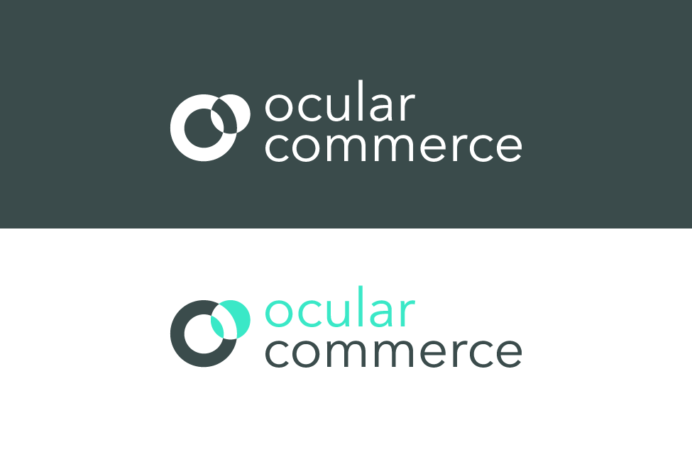

Abstract logo concept. 1 smaller turquoise circle overlaps a larger and muted-color ring. The curve where the turquoise circle overlaps is made distinct, reflecting how AR technology (represented by the turquoise circle) can enhance our perception of the real-world (represented by the ring) through virtual figures